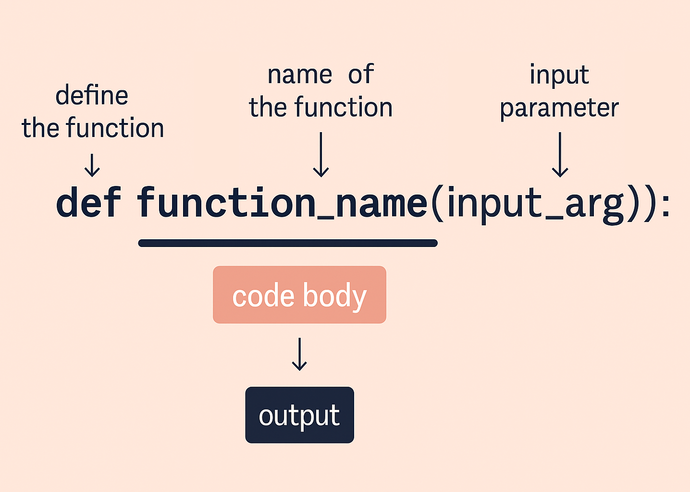
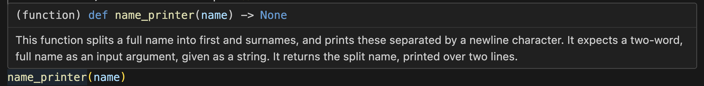
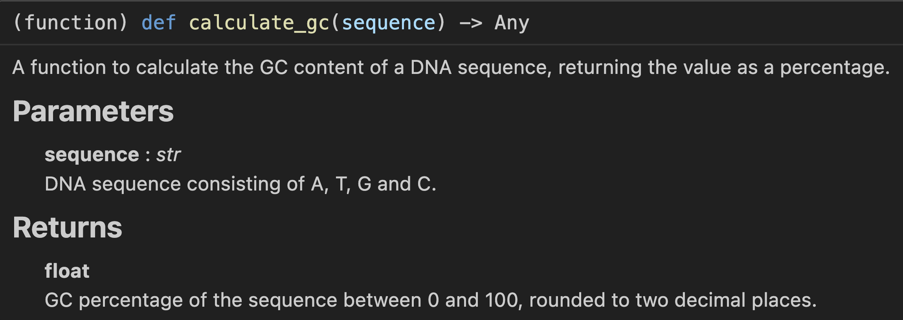

Learning Objectives
Introduction
What are functions in Python?
One of the most powerful constructs in Python, a function is a reusable block of code that performs a specific task. Instead of writing the same code multiple times, we can place it inside a function and call it using its function name, whenever we need to run it. This makes programs shorter, easier to read, and much less error-prone.
Functions also allow us to organise our code into meaningful chunks, so that each part of a program does one clear job. In fact, it is considered bad practice to write functions that cater to more than one task at a time.
In scientific programming, this is organisational, compartmentalising aspect of function-writing is particularly useful. For example, you might write one function to calculate body mass index (BMI), another to convert DNA sequences into RNA, and another to analyse a set of results. Once defined, packaging these operations into functions allows you to reuse them across many datasets and experiments without rewriting the logic each time.
The tutorial video below runs through the concepts that are taught on this resource. Depending on how you prefer to learn, you can view it before or after reading through the lesson; although we recommend watching it once you have read the materials, as a mechanism to summarise and contextualise your knowledge.
Function: A reusable block of code that performs a specific task. Once defined, it can be called easily using its function name, which is a user-defined identifier. Syntactically, a function name is followed by round parentheses, which may contain input arguments (called parameters). By grouping logic inside a function, you avoid repeating code, make your programs easier to read, and keep related operations organised in one place.
Defining functions
In order to use a function, it must first be defined or instantiated. In Python, this is done using the keyword def. The syntactical ruling here is thatdef is followed by a user-defined function name, and round parentheses, that contain the input arguments that the function should expect, followed by a colon.

In the simple example shown below, let's define a simple function that prints your name as 'first name' and 'surname'. It will expect:
- A single input argument, in the form of a string of someone's first and last name
It will process:
- The single argument by using the
.split()string method and a multiple assignment, to split the first and surname into appropriately named variables - Output: this will be handled by two print statements with f-strings, printing the name in the desired format.
As you can see the cell runs, successfully, with no output and no error raised. However, this is because you have instantiated and defined the function in memory, but have not yet used the function.
To do so, you must call it - as we have done previously with some of Python's built-in functions such as print() or input().
Your IDE will often apply a default colouring scheme to the code you write. A good way to know that a function has been instantiated, and is available for use, is that - when typed - it will colour as per the colour scheme your IDE is actively using. For instance, in Microsoft Visual Studio Code (which is also used in GitHub's Codespaces) - by default - functions are coloured in pale yellow.
Returning an output
In an IDE such as Microsoft's Visual Studio Code (or your GitHub Codespace), mousing over a function's name will reveal a glance some information about the function.

If you look at the image above, you'll notice the line above the docstring which indicates -> None. This means that the function is returning nothing. In Python, if a function does not explicitly use a return statement, it automatically returns the special value None. Functions that only print() something fall into this category. After all, print() is considered an output operation, where it takes information from inside the program, outside of it (i.e. to display it on your console). In the case of our example name_printer() function, we merely displayed output on the console; but the function did not return any data back to the rest of the program for subsequent, downstream use.
As we touched on briefly during Python Fundamentals 1, in the section on types, None is a special built-in value that represents the absence of a value, and it has its own data type called NoneType. It is used to indicate that something has no meaningful result. When a function does not explicitly return anything, Python automatically returns None by default. None is equivalent to False and can be used to dictate conditional statements.
This is where the keyword return is immediately useful. It allows our function to produce a value that can be stored, manipulated or passed into another function, further downstream in our Python program.
A return statement terminates the function immediately, and sends a value back to the place where the function was called. That value can then be used in a multitude of ways: it can be assigned to a variable, printed, used in a calculation, or combined with other returned values, for instance.
Using return makes a function much more powerful and reusable. Instead of simply performing an action, a function that returns output will provide information to the rest of your code — for example: returning a calculated chemical concentration, the number of codons in a nucleic acid sequence or the fitness of a gene.
Lets extend our previous example to return the first name and surname, rather than print them.
To do so we call the keyword return on a newline inside the function coding block, directly after we place the variables we wish to return. If there is more than one they are separated by commas:
Calling our function now will return the given variables which we can store inside a variable:
If there is more than one variable returned they will be packed into a Tuple. If you cast our minds back to PF2 we are reminded that to unpack a tuple you assign it to variables, that number the same in length of the tuple, separated by a comma:
These variables are now free to be used in subsequent code:
Return terminates the function when called
The return statement at the end of a function terminates it, at that point, returning the specified information back to the program.If no return statement is provided, the function returns None, by default. If you were to place a return or any other code after a previous one, this will not be executed. However, this does not mean you will only ever have one return keyword in a function, often you can have many as different variables are returned depending on what the function does with different inputs.
Calling the new function will now only give us the variable from the the first return statement:
1.
For this exercise, you have been given a list of random numbers. In the code cell below, write a simple function of your own that performs the following:
- Iterates (using a
forloop) through the list of numbers, and creates two new, internal lists:even_numbersandodd_numbers. HINT: Use the modulus operator%(which returns the remainder after a division) and conditional statements to determine if a number is odd or even. You can also use the.append()list method, to add values to a list. - Creates a dictionary called
odd_even_dictthat contains two keys:"Even numbers"and"Odd numbers", with the listseven_numbersandodd_numbersprovided as values for the two keys, respectively. - Using
return, have the funciton return the dictionary as its only output. - Finally, call the function and print its result.
Docstrings
Above, we briefly referred to constraining a function broadly to handling one task or process; this constitutes good function-writing practice. In line with this, and similar to how commenting is encouraged to annotate your code as you write it, another nearly-essential good habit to get into when writing functions, is to document what your function does. This is helpful both for your own future reference, but also for sharing a function with another user, and having the function's operation be succinctly, but fully, explained.
Always making this easy for the user, Python has a built-in feature for explaining your functions in a clear, systematic way, called a docstring. The syntax for this is to open two sets of triple quotes: either ''' or """, and have them on their own lines, fencing (from above and below) the contents of the docstring, itself. In the lines between these triple quotes, you can write in a textual explanation for what your function does. The correct term for the structure containing the docstring is a triple-quoted string literal or a multi-line string literal.
As a rule of thumb, a good docstring should include:
- A brief summary of what the function does
- A description of the input arguments (and their expected types, if relevant)
- An explanation of what the function returns
- Any important notes about assumptions, restrictions or special behaviours
Docstring: A short descriptive string written immediately below a function’s def line. It explains the purpose of the function, its input arguments, and its output so that users can understand how to use it.
Viewing docstrings with help()
A programmatic approach to reveal a docstring is to use Python’s built-in help() function. This function, in general, is intended to display detailed information about an object, including its docstring, signature and where it is defined.
To view the documentation for a function you have written, simply pass the function’s name (without its parentheses) into help(). This is especially useful when working in larger projects or when revisiting code after some time, as it allows you to quickly remind yourself what a function does and how to use it.
To ensure that the docstring is correctly formatted, and read by functions such as help(), the triple quotes must be on the line directly beneath the definition line. If there is a line break, it will leave help() unable to read it.
Type hints
For more informative docstrings, Python also provides an optional system for describing the kinds of data a function expects and returns. These are called type hints or annotations, and they sit directly in the function header, rather than inside the docstring. If we take another look at the image below, the first line clearly displays this header, underscoring it to separate it from the docstring directly beneath it.
Type hints do not change how the code runs, but they make your functions clearer, easier to debug and more informative for anyone reading or using your code. They also allow development tools and code editors to warn you early if you pass the wrong type of value into a function, because the function already has (implicitly stored, from when it was defined) they type of values it expects to see.
Type hints in a function header
There are two structures within a function for which you can display type hints: input arguments and returned outputs. There are also different places in which you can leave these type hints: within the function's definition line, and within the docstring.
Let's start by looking at specifying a type hint to display in a function's header. The syntax for this is:
- Annotating each input argument by placing a colon
:after its name, followed by the expected data type. - Annotating the return value using an arrow
->after the parameter list.
Let's look at another simple function that we can use to determine the percentage of guanine and cytosine residues - percentage GC content - in a nucleic acid sequence. This example makes use of a simple mathematical operation in its return statement, and type hints in the function's definition line:
In the first line, we specify that the input argument stored in sequence must be of type string, and that its output must be returned as a floating point value. Note that the value that is returned, is processed by the round() function, on its way out, rounding it to two decimal places.
Let's call the function here:
With type hints, we must use Python's shorthand, built-in types. For instance, strings are str, integers are int etc. The keywords for each type are listed in the section on types in the Python Fundamentals 1 lesson.
Docstring conventions
Python also allows us to specify type hints inside the function’s docstring. This can be an alternative, or an addition, to placing them in the function's header.
There are three broad, commonly-used conventions for writing function docstrings in Python:
The approach to docstring writing that we will focus on in this lesson employs a style convention called Sphinx notation, which is especially common in scientific Python libraries. It allows you to describe each parameter, its expected type, the meaning of the returned value, and also the returned output type; displaying it all in a structured, easily-legible manner.
In this style, each input argument is documented using two lines:
:param argument_name:— a short description of what the argument represents:type argument_name:— the expected data type
:return:— a description of the value that the function returns:rtype:— the return type
If you then mouseover the function name in your IDE, you see that it has neatly formatted the docstring under explanatory headers for input paramters and returned outputs, clearly labelling the expected data types.

This gives your docstrings a highly legible, professional appearance; of particular importance should you choose to publish or share your functions with other users.
2.
Below is a Python function. Look at the function, and try to ascertain how it works. Write a suitable docstring for this function, using the Sphinx convention, and be sure to highlight the following information:
- What kind of data the input argument or 'parameter' should be.
- The data
typeof the input argument - The returned output of your function
- The data
typeof your returned output.
help() function to display the docstring.
Function scope
When we write functions, we also create a new, contained compartment within the function, in which variables can exist and operate. This compartment is called the function scope. In Python, scope determines which parts of a program can access or modify particular variables or data structures. Its containment to operating within the function alone, prevents different pieces of code from accidentally interfering with one another.
For instance, if you have multiple functions, each with internal variables called datain their code blocks then - were the variables not constrained to operating only within each function - you would have the data variable being overwritten and affected by the other function or code block. This local scope is, therefore, a behaviour implicit to all functions in Python - whether built-in, or user-defined.
When a function is called, Python automatically creates a local scope for it. Any variables defined inside the function — including its input arguments — belong to this local scope. They exist only while the function is running, and disappear as soon as the function terminates. This means that variables inside a function cannot be accessed from outside it, even if they share the same name as a variable elsewhere in the program.
To help solidify this understanding, note that any variables defined outside a function belong to the global scope. That is - they can be accessed by functions anywhere in your coding environment. But functions will not change global variables unless they are explicitly instructed to do so. This separation is a key reason why functions are so powerful: they allow us to write clean, predictable code where each function handles its own task without unintended side effects.
Having this localised function scope also helps to prevent bugs, and makes debugging easier, encouraging good programming practice by ensuring that functions rely only on the data passed into them, returning their outputs, cleanly.
Run the cell below, to show how the variable named variant outside the function (in the global scope) is not overwritten, after the function with a variable of the same name, is called:
It is considered good programming practice to design functions that return values rather than altering global variables directly. This produces code that is predictable, easier to test, and easier to debug. Modifying these global variables (often shortened to globals) should generally be avoided except, perhaps, in cases where your script has constants.
Modifying global variables
While it is often discouraged, if you absolutely must write a function to modify a global variable, then you have to declare it to overwrite Python's default behaviour. This can be done using the global keyword, inside the function:
Example: tying it together
Now that we have covered all the basics of defining a function, let's tie it all together in the context of solving a common biological task: working with DNA fragments. We will be drawing from concepts and techniques taught across the previous three Python Fundamentals less, with a particular focus on list comprehensions.
In the cell below, we aim to write a function that wraps together three small tasks, into a small processing pipeline. This aims to make a single function that can be called repeatedly on new data. The function should:
- Join all our DNA fragments (a list of strings) together
- Split the new sequence into codons
- Count complete codons
- Calculate the GC content.
Once defined, we can call this function to produce two outputs, as specified: codon_count and gc_percentage. We can then unpack this into two variables, and print these in our print statement.
Summary
In this section, we covered how to write and use functions in Python, allowing you to organise your code into clear, reusable blocks that each perform a single well defined task. The lesson explored how to define functions using the keyword def, how to pass input arguments and how to return outputs from a function, using return.
We covered docstrings as a structured way of documenting what your functions do, along with type hints and paramter annotations that help make your code more readable and easier to maintain. We also explored function scope, understanding the distinction between local and global variables, and how functions are able to operate independently of the wider program, unless explicitly instructed otherwise.